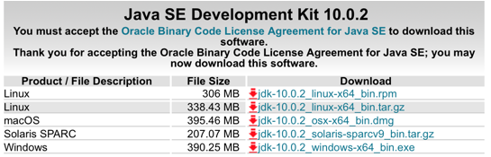

安装jdk
jdk是运行或者开发java的必须工具，很多软件都会依赖jdk，因此必须学会安装jdk
1、查看当前系统的jdk情况
|
[root@localhost
wj]# rpm -qa | grep java
tzdata-java-2013g-1.el6.noarch
java-1.6.0-openjdk-1.6.0.0-1.66.1.13.0.el6.i686
//可以看到当前系统已经安装了jdk，但是版本太旧了
java-1.7.0-openjdk-1.7.0.45-2.4.3.3.el6.i686
|
2、删除系统jdk包
|
[root@localhost
wj]# yum remove -y java-1.6.0
[root@localhost
wj]# yum remove -y java-1.7.0
[root@localhost
wj]# rpm -qa | grep java //查看是否删除了
tzdata-java-2013g-1.el6.noarch
|
3、到官网下载最新的jdk包，http://www.oracle.com/technetwork/java/javase/downloads/index.html
, 下载的时候注意64位或者32位

4、将下载的压缩包复制到“/usr/local/src/”，解压
|
[root@localhost
src]# cp /media/sf_data/jdk-10.0.2_linux-x64_bin.tar
/usr/local/src/jdk.tar
[root@localhost
src]# tar -xvf jdk.tar
|
5、配置jdk环境变量，打开“/etc/profile”，在最后面追加如下
|
[root@localhost
src]# gedit /etc/profile
#java environment
export
JAVAHOME=/usr/local/src/jdk-10.0.2 //这个路径就是jdk解压的路径
export
CLASSPATH=.:${JAVAHOME}/jre/lib/rt.jar:${JAVAHOME}/lib/dt.jar:${JAVAHOME}/lib/tools.jar
export
PATH=$PATH:${JAVAHOME}/bin
|
6、刷新profile
|
[root@localhost
src]# source /etc/profile
|
7、测试jdk，在终端输入命令“Java -version”
|
[root@localhost
src]# java -version
java version
"1.8.0_181"
Java(TM) SE
Runtime Environment (build 1.8.0_181-b13)
Java HotSpot(TM)
Client VM (build 25.181-b13, mixed mode)
[root@localhost
src]#
|
Copyright@david
zhytwj2018@163.com